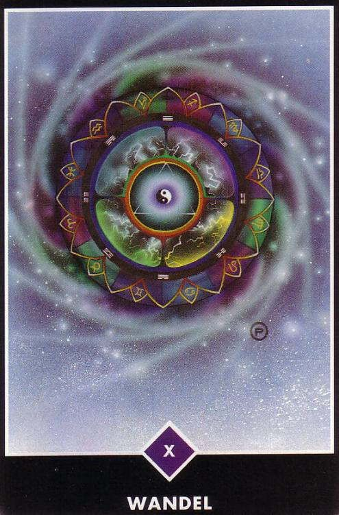
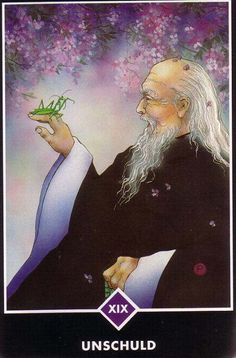
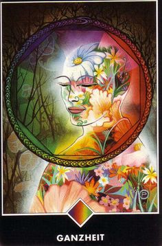
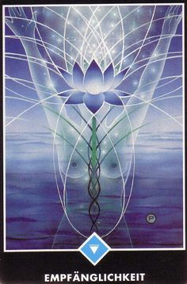
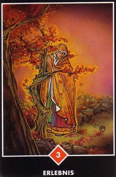
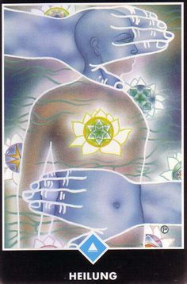

La meditación comienza por separarse de la mente, por ser un testigo. Ésta es la única manera mede separarse de algo. Si estás mirando hacia la luz, naturalmente, una cosa es segura: tú no eres la luz; eres quien está mirando la luz. Si estás observando las flores, una cosa es segura: tú no eres la flor; eres el observador.
La contemplación es la clave de la meditación. Contempla tu mente. No hagas nada: ni repetir un mantra, ni repetir el nombre de Dios. Sólo observa lo que la mente hace. No la perturbes, no la obstaculices, no la reprimas; no emprendas nada por tu parte. Limítate a ser un observador. Y el milagro de la contemplación es la meditación. A medida que observes, lenta, lentamente, la mente se vaciará de pensamientos. Pero no te estás quedando dormido; estás cada vez más alerta, más consciente.
Cuando la mente se vacía por completo, toda tu energía se transforma en una llama de despertar. Esta llama es el resultado de la meditación. Así que puedes decir que la meditación es otro nombre de la contemplación, del ser testigo, de la observación, sin emitir juicio ni evaluación alguna. Sólo por medio de la contemplación, saldrás de inmediato de la mente...”
| NOMBRE DE LA CARTA | SIGNIFICADO | CONSEJO | IMAGEN |
| CAMBIO | Simboliza la rueda de la fortuna, el karma, el destino. Está llena de simbología, para enseñarnos, que en la rueda de la vida todo cabe, que todo tiene su causa. En ella vemos: los 12 signos zodiacales, los 8 trigramas del I Ching, los 4 puntos cardinales, el triangulo apuntado hace lo divino y el Ying y el Yang. Es la Rueda de la Vida y al Muerte, que no para de dar vueltas. Los ciclos se repiten, los hechos se suceden repetidamente y son reincidentes, una cosa lleva a la otra y siempre es lo mismo | observa lo cambiante que es la vida. Intenta comprender la cadencia y el patrón en el que se mueve la rueda de la vida y adaptate a él, afrontalo sin miedo y le habrás cogido el pulso a la vida |  |
| INOCENCIA | Representa un anciano observando su vida con la inocencia de un niño y con cara de felicidad. Complacido de lo que le ha tocado vivir. Las flores simbolizan el tiempo de soltar, de relajarse y estar satisfecho de lo que ha vivido y de su experiencia. | El Zen nos enseña que si abandonas todo conocimiento o identidad. Si abandonas tu personalidad, que es algo adquirido e impuesto por los hombres, te encontrarás de nuevo con la inocencia de un niño, que es como nacemos, es decir, renacerás. La recuperación de la inocencia te lleva al renacimiento |  |
| PLENITUD | Esta figura esta de pie sola, silenciosa, y aun así alerta.Su ser interior esta lleno de flores: porta la cualidad de la primavera y se regenera adondequiera que vaya. Este florecimiento interior y esta totalidad que siente permiten la posibilidad de un movimiento ilimitado.Puede ir en cualquier dirección: interior y exterior, no existe ninguna diferencia, ya que su gozo y madurez no pueden ser disminuidos por los hechos externos. Ha llegado a una época de centramiento y expansión, el fulgos blanco a su alrededor en su protección y su luz.Todas las expectativas de la vida lo han conducido a este momento de perfección | Cuando sacas esta carta sabes bien que este momento implica un regalo por el duro trabajo.Tu base es solida ahora, y el éxito y la buena fortuna son tuyos ya que son el resultado de lo que has experimentado interiormente. |  |
| RECEPTIVIDAD | La receptividad representa lo femenino, es la cualidad receptiva del agua y de las emociones. Los brazos de la figura se extienden hacia arriba para recibir, y esta totalmente sumergida en el agua. No tiene cabeza, no tiene una mente ocupada y agresiva que oculte su receptividad pura, por lo que, a medida que se llena, esta vaciándose continuamente, desbordándose y recibiendo mas. El modelo o matriz de loto que emerge de ella, representa la armonía perfecta del Universo, la cual se vuelve evidente cuando nos sintonizamos con este.La Reina del Agua trae un tiempo de desapego y gratitud por lo que la vida nos trae, sin expectativas o demandas. | No importa ni el deber ni un pensamiento de merito o recompensa.La sensibilidad, la intuición y la compasión son las cualidades que brillan ahora, disolviendo todos los obstáculos que nos mantienen separados a unos de otros y del todo. |  |
| EXPERIMENTAR | En esta carta, la mujer no solamente toca el árbol, esta en comunicacion con el, casi se ha hecho una con el.Es un árbol viejo que ha visto muchos tiempos duros.Le toca con suavidad, con reverencia, y lo blanco que hay dentro de su capa refleja la pureza de su corazón.Hay humildad y simplicidad en ella, y esta es la forma de acercarse a la naturaleza.La naturaleza no hace sonar los tambores cuando irrumpe a través de una flor, ni tampoco entona un canto fúnebre cuando los arboles dejan caer sus hojas en el otoño.Sin embargo, cuando nos acercamos a ella con el espíritu apropiado, comparte con nosotros muchos secretos. | Si no has oído a la naturaleza susurrandote ultimamente, es un buen momento para darle la oportunidad |  |
| CURACION | Es una época en que las heridas profundamente enterradas del pasado salen a la superficie, listas y dispuestas a ser curadas.La figura de esta carta esta desnuda, vulnerable, abierta al toque amoroso de la existencia.El aura alrededor de su cuerpo esta llena de luz, y el tipo de relajación, de cuidado y amor que le rodea, disuelve su lucha y sufrimiento.Lotos de luz aparecen en su cuerpo físico y en torno a sus cuerpos sutiles de energía, los cuales, según dicen los sanadores, se encuentran a nuestro alrededor | Cuando estamos bajo la influencia curativa del Rey del Agua, ya no nos ocultamos mas de nosotros mismos o de los demás.En esta actitud de apertura y aceptacion podemos curarnos, y ayudar a otros a estar sanos y totales |  |